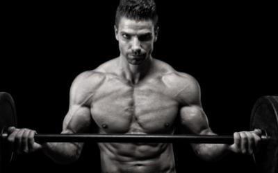

Shredded! A Complete Guide To Getting to 10% Body Fat
Is your goal to get “see your abs” lean? Would you like to fill out your t-shirt but still have a waspish waist? Do you want to look like you’re flexing without actually flexing?
Cycle Your Diet
Yes, what is an article about getting lean without mentioning diet? Abs are made in the kitchen, right? Well, yes, to an extent. But diet is still a key factor in the making of a leaner you. To get to an extreme level of said leanness takes a strict habit of meal planning, disciplined adherence to that plan and the wherewithal to listen to your body and adjust when needed.
Yes, what is an article about getting lean without mentioning diet? Abs are made in the kitchen, right? Well, yes, to an extent. But diet is still a key factor in the making of a leaner you. To get to an extreme level of said leanness takes a strict habit of meal planning, disciplined adherence to that plan and the wherewithal to listen to your body and adjust when needed.
This process cuts calories down for a limited time forcing your body to burn fat, even at rest. Once your body starts to get wise and tries to slow down your metabolism to conserve energy due to the lack of calories you jack up the carb intake and give it a much-needed surge to kick start your fat-burning furnace once again.
- Start by choosing which days will be high and low carb days. For example, lower body training days may be good for high carb periods, other training days could be for low to moderate carb levels and off days could be reserved for very low carb days.
- In the beginning it will be difficult to predict what your exact levels should be for each day so here is a good starting point: For low days go with .5 to .75 grams of carbs per pound of bodyweight, for moderate days go with 1 to 1.25 grams per pound and for high days aim for around 2 grams per pound
- Be sure you are getting in at least 1 gram of protein per pound of bodyweight. This can realistically be increased to 1.5 as your diet progresses.
- Healthy fats should consist of around 20-30% of your total daily calories. These fats will come in handy on those crazy, low carb times when you need some extra fuel to get you through your workouts.
The Importance of Training
Most individuals think only in terms of diet when wanting to get ultra-lean without much thought given to training. The belief that the workout will take care of itself and diet is the main focus is a big mistake.
Is your training the best it can be? Are you utilizing every minute to its fullest? How are your rest periods? Are they monitored to burn some extra calories and rev up your metabolism long after training?
Training acts as a trigger to spark the metabolic fire. Without proper, effective resistance training a good bit of the weight you will eventually lose will be muscle. Weight training keeps the muscle on – it acts as an insurance policy against atrophy.
- Try a higher frequency of training such as training every body part twice per week. This, in turn, will coax your body into recovering quicker and will burn more body fat in the process.
- Keep a close eye on rest periods. Nothing will affect your training progress and subsequent fat loss regarding training than getting into the habit of setting rest times. For starters, go with 2 minutes for the big lifts like squats and deadlifts and 1 minute for all other lifts.
- Moderate your volume. If you have decided to train more frequently it would be wise to use a more moderate volume. 12 or so for chest, back and quads and around 9 for arms, shoulders, calves and hams.
- Leave your ego at the door – this isn’t a powerlifting meet. Ditch trying to max out for each set. Instead, shoot for a bit higher of a rep range such as 8-12 or 10-15 – but still go to failure.
Recover Properly
Finally, the catalyst to set the whole lose-fat-but-keep-my-muscle equation is proper recovery – namely sleep and managing stress. Getting proper rest is paramount and all your effort in the gym and in the kitchen will be for naught if you don’t get enough of it. During sleep key hormones such as growth hormone are excreted to help repair and regulate your body’s processes.
Stress management is another important part of staying on the course of progress. No, you won’t be able to rid your life of stress completely, but reducing it and managing the rest in a healthy way with consistency will make getting to your goals that much easier.
- Get at least 8 hours of sleep each night. Also, get up in the morning at the same time each day including weekends. You don’t want to start messing with your meal times and screw up your rest schedule.
- Keep stress to a minimum. Nothing will wreck your plan like constantly being in a state of stress. Find ways to effectively manage stress and reduce or eliminate it where you see fit.
Training Plan:
Train two days on, one day off, two days on and two days off such as Monday, Tuesday, Thursday, Friday with Wednesday and weekends off. Add in 30 minutes of cardio on off days.
| Day 1 Exercises | Warm-Up Sets | Work Sets | Rest |
|---|---|---|---|
| Incline Barbell Bench Press | 2x12 | 3x8-12 | 60 |
| Flat Dumbbell Bench Press | - | 3x8-12 | 60 |
| Wide-Grip Pull-Up | 2x12 | 3x8-12 | 60 |
| Two-Arm Dumbbell Row | - | 3x8-12 | 60 |
| Seated Dumbbell Shoulder Press | 1x12 | 3x8-12 | 60 |
| Floor Crunch | - | 3x20 | 30 |
| Hanging Leg Raise | - | 3x20 | 30 |
| Day 2 Exercises | Warm-Up Sets | Work Sets | Rest |
|---|---|---|---|
| Barbell Curl | 2x12 | 3x8-12 | 60 |
| Skull Crusher | 2x12 | 3x8-12 | 60 |
| Seated Calf Raise | 1x12 | 3x8-12 | 60 |
| Barbell Squat | 2x12 | 3x8-12 | 60 |
| Walking or Static Lunge | - | 3x8-12 | 60 |
| Lying or Seated Leg Curl | - | 3x8-12 | 60 |
| 3-Way Sit-Up | - | 3x20 | 30 |
| Lying Leg Raise | - | 3x20 | 30 |
| Day 3 Exercises | Warm-Up Sets | Work Sets | Rest |
|---|---|---|---|
| Incline Dumbbell Bench Press | 2x12 | 3x8-12 | 60 |
| Flat Barbell Bench Press | - | 3x8-12 | 60 |
| Close-Grip Pull-Up | 2x12 | 3x8-12 | 60 |
| Barbell Row | - | 3x8-12 | 60 |
| Standing Barbell Military Press | 1x12 | 3x8-12 | 60 |
| Wide-Grip Upright Row | - | 3x8-12 | 60 |
| Floor Crunch | - | 3x20 | 30 |
| Floor Crunch | - | 3x20 | 30 |
| Day 4 Exercises | Warm-Up Sets | Work Sets | Rest |
|---|---|---|---|
| Standing Dumbbell Curl | 2x12 | 3x8-12 | 60 |
| Close-Grip Bench Press | - | 3x8-12 | 60 |
| Close-Grip Bench Press | 1x12 | 3x8-12 | 60 |
| Leg Extension | 2x12 | 3x8-12 | 60 |
| Leg Press | 1x12 | 3x8-12 | 60 |
| Romanian Deadlift | - | 3x8-12 | 60 |
| 3-Way Sit-Up | - | 3x20 | 30 |
| Lying Leg-Raise | - | 3x20 | 30 |